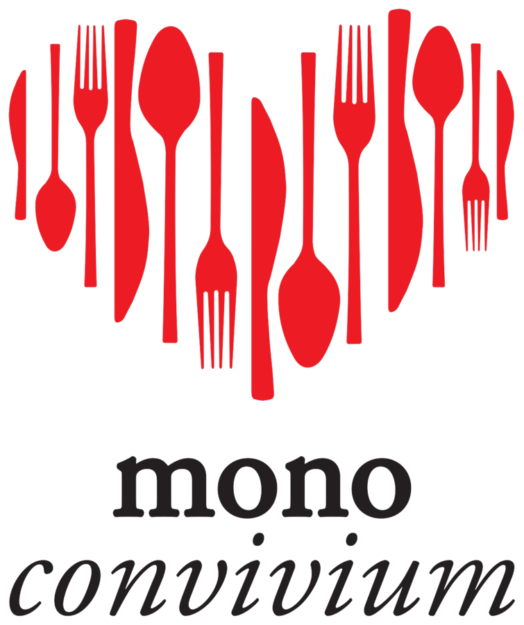
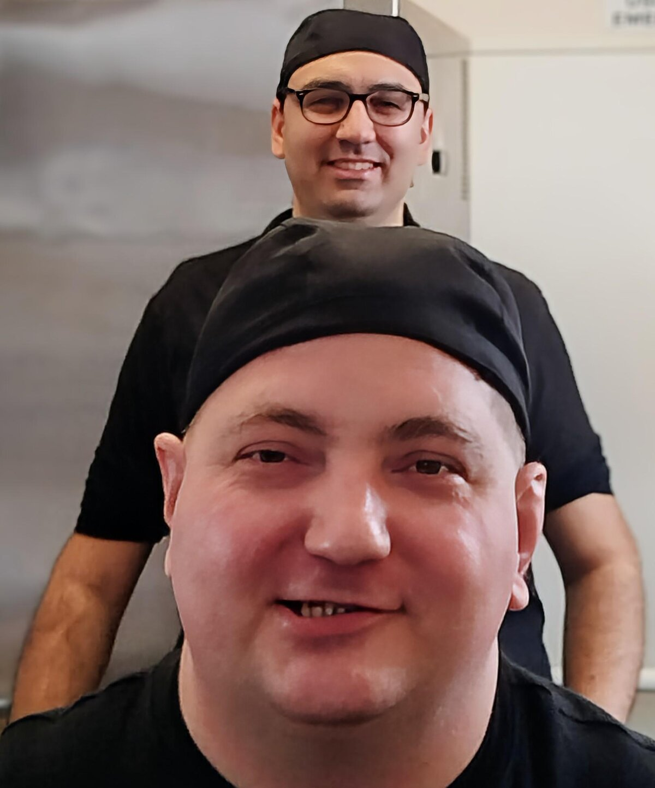
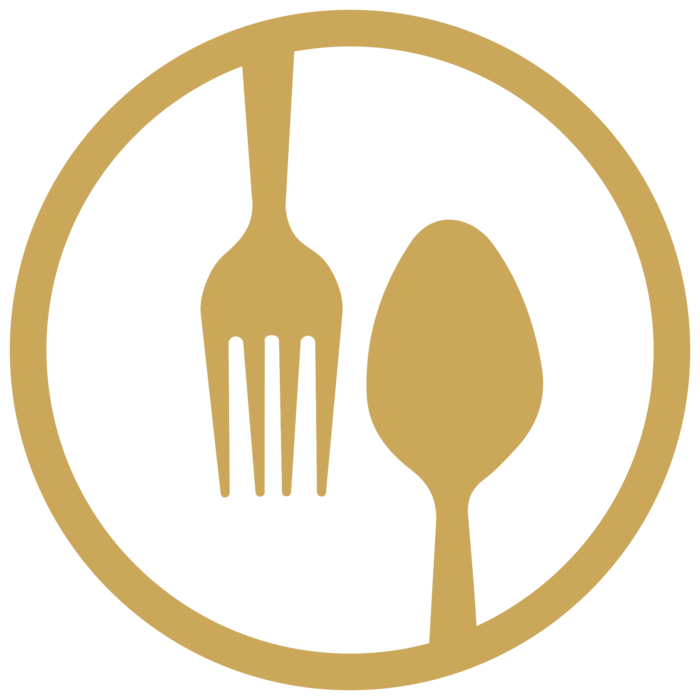

Nutriamo il futuro, con arte e cuore
Il progetto sociale firmato MONO. Non un'iniziativa a fianco dell'impresa: il suo cuore.
Monoconvivium nasce come estensione naturale dell'universo MONO — dal lavoro vero, dal cibo e dalla quotidianità di un'azienda reale, prima ancora che da un'intenzione da comunicare.
Nasce da un'idea semplice e concreta: trasformare il lavoro vero, il cibo e la quotidianità di un'azienda reale in opportunità autentiche. Non "ospitare fragilità", ma trasformare il potenziale in dignità, le relazioni in crescita, la collaborazione in futuro.
Monoconvivium è il cuore sociale di MONO. È il punto in cui impresa, inclusione, formazione e comunità si incontrano attorno alla stessa tavola.
Abbiamo scelto questa parola perché richiama l'idea più alta della tavola: non solo il cibo, ma ciò che il cibo rende possibile — incontro, relazione, comunità.
È una parola che unisce cultura e umanità, e racconta una visione antica e sempre attuale: la tavola come spazio condiviso in cui le persone non si limitano a mangiare insieme, ma crescono, si riconoscono, costruiscono qualcosa.
Tra formazione e lavoro esiste ancora una distanza reale. Molte persone hanno capacità e potenziale, ma non trovano un contesto in cui poter iniziare davvero — non perché manchino opportunità, ma perché mancano sistemi capaci di accoglierle.
Troppo spesso vengono inserite male, accompagnate senza metodo, o escluse in partenza. Monoconvivium nasce per colmare questa distanza.
Fare del lavoro un luogo accessibile, senza renderlo artificiale. Trasformare l'accesso al lavoro in un percorso concreto, umano e sostenibile. È per questo che Monoconvivium esiste.
MONO è un progetto gastronomico costruito su identità, qualità e coerenza. Monoconvivium ne è il cuore sociale — non un'aggiunta, ma una parte del sistema. Vive negli stessi spazi, condivide gli stessi standard, si inserisce negli stessi processi.
MONO
Racconta il cibo come cultura e gesto. Identità, qualità e coerenza tradotte in un banco, in una ricetta, in un servizio.
Monoconvivium
Racconta il lavoro come possibilità e costruzione personale. Le stesse regole, la stessa cura, applicate alle persone.
Un sistema replicabile
Costruire un modello in cui impresa, formazione e comunità non siano mondi separati. Un metodo capace di generare opportunità reali, crescere, adattarsi ed essere replicato.
Dal potenziale all'autonomia
Creare opportunità lavorative e formative concrete dentro l'universo MONO, attraverso inserimento graduale, affiancamento reale e responsabilità proporzionata. Passo dopo passo, senza scorciatoie.
Sette regole che non si negoziano
Dignità
Prima della funzione, viene la persona.
Lavoro reale
Nessun ruolo simbolico. Solo attività che contano.
Metodo
Accogliere significa strutturare, non improvvisare.
Standard
Il livello non si abbassa. Si costruiscono le condizioni per raggiungerlo.
Relazione
La crescita passa dalle persone, non solo dai compiti.
Comunità
Il progetto vive in una rete: impresa, formazione, territorio.
Replicabilità
Costruita per durare, e per essere ripetuta altrove.

Un posto vero.
Nella squadra.
Chef, baristi, camerieri e operatori formati lavorano fianco a fianco, con la stessa responsabilità e lo stesso rispetto. L'ambiente è esigente, organizzato, autentico — un luogo in cui il lavoro viene fatto bene, ogni giorno. Ed è proprio questo il valore.
Monoconvivium nasce dentro un'impresa privata: non una ONLUS, non una fondazione.
È un modello che unisce impresa e impatto, dimostrando che il valore sociale può esistere dentro un contesto professionale reale — senza compromessi su qualità, standard e sostenibilità.
Un modello semplice, concreto, replicabile
Ogni percorso è reale, progressivo, costruito nel tempo.
Ingresso
Accesso tramite enti, partner o selezione diretta. Si parte da dove è possibile iniziare.
Affiancamento
Ogni persona è accompagnata. Il contesto è reale, il supporto costante.
Ruolo
Inserimento operativo in laboratorio, banco o sala. Attività vere, non simboliche.
Crescita
Sviluppo di competenze, autonomia e responsabilità. Ogni passo è costruito.
Integrazione
L'obiettivo finale: diventare parte del sistema, in modo stabile e reale. Il cerchio si chiude dove si è aperto.

Monoconvivium cerca le persone e i partner giusti per crescere.
- Persone in cerca di un ingresso reale nel lavoro
- Enti, cooperative e servizi di orientamento
- Aziende e realtà che vogliono un modello simile
- Segnalazione da enti o servizi di orientamento
- Colloquio conoscitivo con il team MONO
- Percorso costruito su misura, passo dopo passo